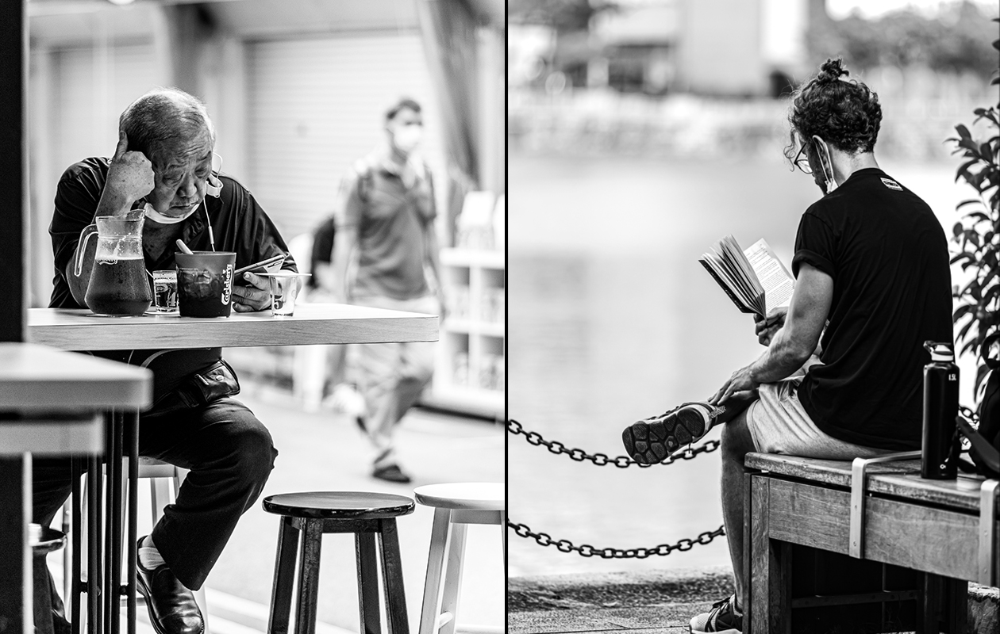
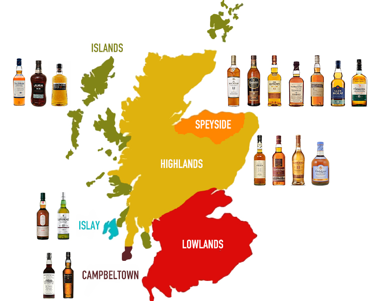

Principal Member of Technical Staff and R&D Team Leader (CoMPASS), Compute System Architecture
imec, Kapeldreef 75
3001 Leuven, Belgium
Sourav.Sengupta@imec.be
Random
This page will act as a buffer for everything about me that does not fit into any of the other (professional) pages on this website. Thus, this page will serve as a measure of my randomness, and hence, my entropy. Enjoy!
Random Facts
- I spent most of my childhood and initial school days at two small/medium towns of West Bengal, India -- Raghunathganj (don't remember much) and Siliguri (can't recognize now).
- I loved my one-year stint as a PhD Candidate at the University of Washington, Seattle, where I was fortunate to work with two intriguing personalities -- Neal Koblitz and William Stein.
- Card tricks were my passion for a few years. I still have more than a dozen interesting decks collected from Ellusionist (the best online magic shop). Will post a list (or photos) sometime.
- I am extremely introverted by nature, and public speaking used to be nerve-racking. I have quite painfully taught myself to perform when I teach or speak in front of large audiences.
- Often, I tend to be obsessively particular about minor details. Can't help! If you are curious, check that every single item in this list had to be two full lines of text on a standard browser.
Hidden Stories
Observing the world from a distance leaves a lot to our imagination! Check the master at work.
The Spirit of Leisure
Mortal Musings
Identity
Identity is a fallacy
Conjectured my brain
Heart's adamant as is
Impossible to train
Me and my years bygone
Omnipresent in absence
Identity is my armour
Amidst sounds of silence
সীমারেখা
আমার দিগন্তে যুদ্ধ যুদ্ধ সাজ
তোমার সীমান্ত কাঁটাতার ছেঁড়া ছেঁড়া
দেশনায়কেরা সিদ্ধান্ত নেবে আজ
কার কার ঘরে হবে নাকো কাল ফেরা
মায়াজাল কাল দুজনেরই যাবে ছিঁড়ে
শিরদাঁড়া যদি সোজা হয় অবশেষে
আজ এসো দেখি দুজন দুপারে ফিরে
গণতন্ত্র কেমন ঘনিয়ে আসে
ग़ुलाम
ज़िंदेगी बस बस में है
ग़ुलामी नस नस में है
दुनिया को सालाम करे
ख़ंजरें आपस में है
भुक्कड़ों के दंगल में
ज़हरीले ये रस्में है
ऐ मुल्क तेरी ख़ैर नहीं
सब ने खाए क़समें है